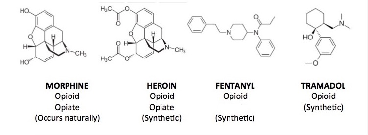

To an extent, we have discussed the general effects and uses of opioids. It’s necessary to understand the refinement as well as the specific effects and side effects. To start one must grow the opium poppy. Next, the latex (a sap-like liquid) is extracted from the plant and dried in the sun. It is then further refined using an acid-base extraction, pressed into bricks, and sundried once more. Finally, those bricks can be used as is or can undergo further processing to produce drugs such as heroin or morphine. (Sisodiya 15)

The same reason we cultivate plants like cannabis and tobacco. We have cannabinoids, nicotinic, and opioid receptors in our body and brain. They are reward centers, they make us feel good. In the case of opium, it is a particularly potent pain relief drug. “Opioids have been considered by clinical physicians the strongest option in clinical practice for the treatment of postoperative pain.” (Bujedo 17) Because of opioids, we can safely remove tumors or decaying flesh from our bodies. Imagine the lingering pain of having your stomach opened from the belly button to the diaphragm, having a piece of your intestine cut out, and then having your intestine and abdomen stitched up. This allows you to recover with little to no pain. The physiological trauma of attempting to recover from such a surgical procedure would be shattering to most people's psychological health.
There is pain in not using opiates as well, at least if one has become dependent on them. Addiction is not just mental but also physical, the body can suffer from it as well. Following the short-term withdrawal of opium, the body will experience symptoms such as; insomnia, elevated body temperature, nausea, watery discharge from the sinuses, and muscle spasms. In the long term, an addicted individual will experience; dysphoria, short-term memory issues, and anxiety to name a few.